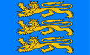

| Ciri | |
|---|---|
| Beschreibung | |
| Weitere Namen | Ciri, Das Löwenjunge von Cintra, Fiona, Das Mädchen im Wald |
| Rasse | Mensch |
| Geschlecht | weiblich |
| Augenfarbe | grün |
| Haarfarbe | hellblond |
| Titel | Prinzessin von Cintra |
| Nationalität |  |
| Darsteller | Freya Allan |
| Familie | |
| Eltern | Pavetta (Mutter), Duny (Vater) |
| Verwandte | Pavetta (Mutter), Duny (Vater) |